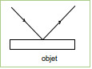
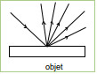

Pourquoi arrivez-vous à distinguer un bout de bois et un morceau de métal du premier coup d’œil ?
Parce qu'ils n'ont pas la même couleur bien sûr, mais surtout parce qu'ils ne renvoient pas la lumière de la même façon.
Un peu de "théorie" : quand vous éclairez un objet (non transparent), cet objet va :
réflexion de la lumière :
Un rayon lumineux qui arrive sur la surface d'un objet provoque la réémission d'un rayon dans une seule direction.
diffusion de la lumière :
Un rayon lumineux qui arrive sur la surface d'un objet provoque la réémission de rayons lumineux dans toutes les directions.
Dans de nombreux cas, les deux phénomènes cohabitent. Mais, par exemple, dans le cas du bois, la réflexion est presque totalement absente.
En revanche pour le métal, la réflexion domine souvent : plus la surface est lisse, plus elle est importante (une surface métallique parfaitement lisse donnera.....un miroir). Dans le cas de la réflexion, on utilise l'expression "spéculaire".
BabylonJS permet de créer ses propres matériaux et de choisir la proportion de réflexion et de diffusion. Vous allez pouvoir choisir la couleur de la lumière diffusée et la couleur de la lumière réfléchie.
Définissons un matériau
var materiau = new BABYLON.StandardMaterial(nom, scene);
Une fois le matériau défini, vous allez pouvoir lui donner une couleur (ou plutôt des couleurs) :
couleur de la lumière réfléchie :
materiau.specularColor = new BABYLON.Color3(Rouge, Vert, bleu)
couleur de la lumière diffusée :
materiau.diffuseColor = new BABYLON.Color3(Rouge, Vert, bleu)
Pour définir une couleur (avec "BABYLON.Color3") il faut renseigner le canal rouge, le canal vert et le canal bleu. Pour plus d'informations sur la notion de synthèse additive (RVB), vous pouvez consulter (http://fr.wikipedia.org/wiki/Synth%C3%A8se_additive). Les valeurs "Rouge", "Vert" et "Bleu" sont, dans BabylonJS, comprises entre 0 et 1 (Color3(1,1,1) donnera du blanc).
Il est possible de choisir la "proportion" de lumière réfléchie, pour un matériau donné, en utilisant l'attribut "materiau.specularPower" .
l reste ensuite à associer le matériau nouvellement créé à un objet (attribut "material" du mesh) : mesh.material= materiau
Créer une nouvelle application (app_09)
script.js
var canvas = document.getElementById("renderCanvas");
var engine = new BABYLON.Engine(canvas, true);
var scene = new BABYLON.Scene(engine);
var camera = new BABYLON.ArcRotateCamera("maCamera", 0, Math.PI/2, 15, new BABYLON.Vector3(0, 0, 0), scene);
var light = new BABYLON.PointLight("pointLumineux1", new BABYLON.Vector3(0, 0, 10), scene);
var tore = BABYLON.Mesh.CreateTorus("torus", 4, 1, 50, scene, false);
var cyl=BABYLON.Mesh.CreateCylinder("nom", 7, 5, 5, 50, scene, false);
tore.rotation.z = Math.PI/2;
tore.position.z=2;
var materiau = new BABYLON.StandardMaterial("mat1", scene);
materiau.specularColor = new BABYLON.Color3(0.5, 0,0);
materiau.diffuseColor = new BABYLON.Color3(0,0,0.5);
materiau.specularPower=20;
cyl.material=materiau;
tore.material=materiau;
scene.activeCamera.attachControl(canvas);
engine.runRenderLoop(function () {
scene.render();
});
Tester l'application app_09 et modifiez ensuite certains paramètres ("materiau.specularPower" par exemple) afin de mieux appréhender les notions vu ci-dessus. Testez plus particulièrement le cas où l'on a :
materiau.diffuseColor = new BABYLON.Color3(0,0,0)
et
materiau.specularColor = new BABYLON.Color3(0.8,0.8,0.8)
N'avez-vous pas la légère impression que notre mug à quelque chose de métallique ? Augmentez la valeur de "specularPower", quelle est votre impression ?
Tout cela est bien complexe. Certaines parties d'un objet peuvent "briller" et d'autres non. La couleur de la lumière renvoyée par les parties qui brillent sera plutôt gérée par le "specularColor" et les parties mates (non brillante) seront plutôt gérées par "diffuseColor". La position de la caméra et de l'éclairage ont aussi une grande importance (surtout dans le cas de la réflexion puisque la lumière est réfléchie dans une seule direction).
Au niveau du matériau, vous pouvez aussi jouer sur d'autres facteurs :
Ambiant color : la "couleur ambiante" est la couleur d'un objet quand celui-ci se trouve dans l'ombre (quand il n'est pas directement éclairé. Pour définir cette "couleur ambiante" :
materiau.ambientColor = new BABYLON.Color3(r,v,b);
Emissive color : la "couleur émissive" est la couleur de la lumière émise par un objet quand ce dernier émet sa propre lumière (en absence de toute autre source de lumière). Pour définir cette "couleur émissive" :
materiau.emissiveColor = new BABYLON.Color3(r,v,b);
Modifier l'app_09 en ajoutant une "ambientColor" et une "emissiveColor". N'hésiter pas à tester différentes couleurs